Duration:
8 Weeks
Role and Team Size:
UX Designer, Individual Project
Tools Used:
Miro, Figma, Zoom, Google Suite, InVsion
Key Skills:
User Research, User Interviews, Data Synthesis
and Analysis, Empathy, Ideation, Wireframing
and Prototyping, Usability Testing,
User Observations
Mission Statement:
Designed to minimize time spent on making
travel plans by customizing searches based
on the user's specified needs.
Overview
Problem
Working traveler's struggle to find the information they need about potential travel
spots. Whether that's finding activities based on interests, looking at a location, or
looking at the cultural and historical significance of a place, busy travelers need a
faster and more efficient way to easily access this information.
Solution
Dual Nature offers convenience by creating a site that personalizes travel research
based on the users' interests, hotel preferences and financial needs, making
it easier to book trips than ever before.
Target
Dual Nature was designed around working travelers who plan trips with limited free time.
Dual Nature focuses on travelers by personalizing their
searches based on their individual travel needs.
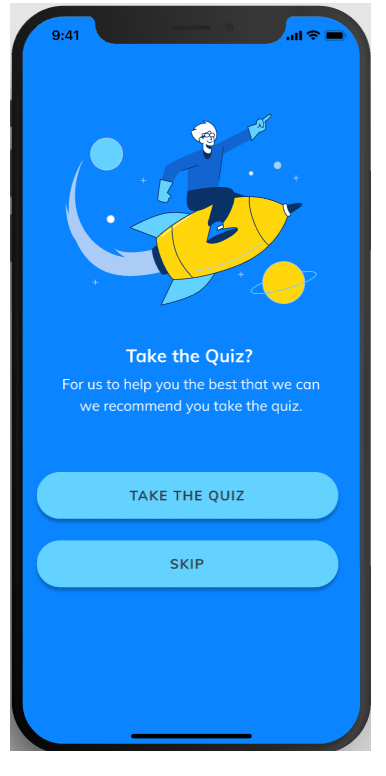
Personal Needs Quiz
Take the quiz to help the app
personalize searches based on
your individual travel needs.
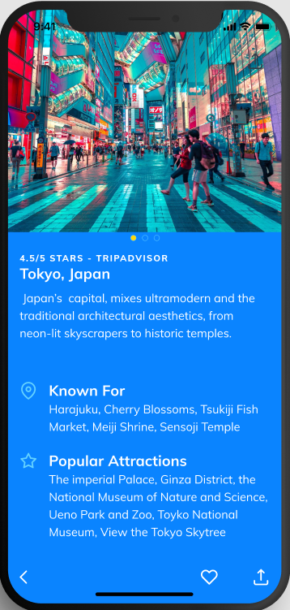
Location Information
Look for what different destinations
have to offer in activities and what
destinations are known for.
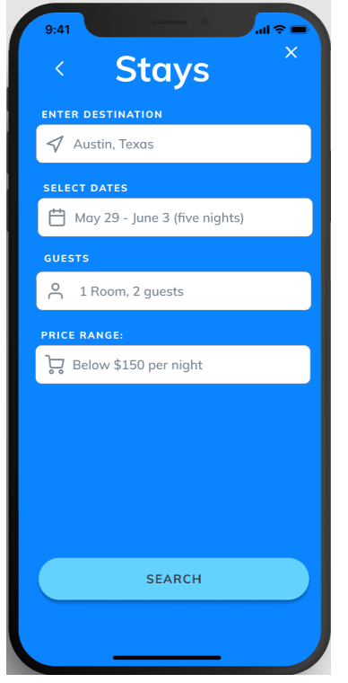
Stays Sarches
Find the amount of rooms and beds you
need based on how many guests
you have traveling with you.
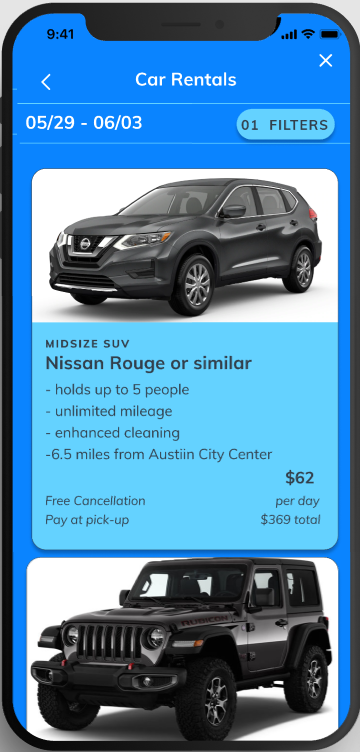
Rental Cars
Reserve rental cars as needed.
The app gives you multiple car
options so you can a vehicle that
best suites your needs.
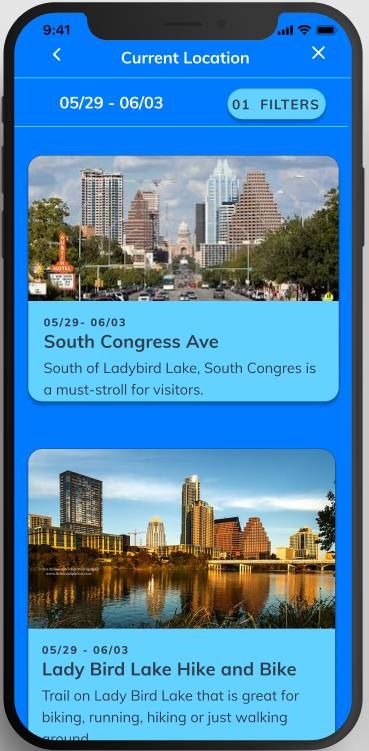
Things to Do
Find and reserve activities in the
place you are traveling.
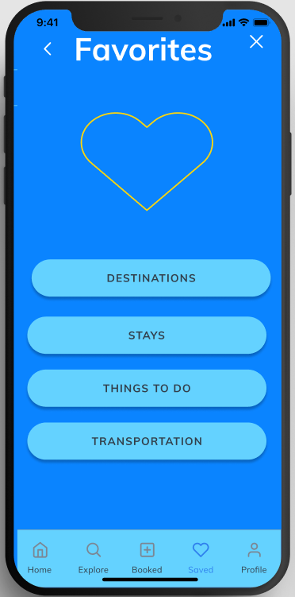
Favorites
Add items you want to save
from your searches to your
favorites so you can
refer back to them later.
Research
For this project I used the Design Thinking Process. The first step in this process is to empathize
and to empathize with users I needed to understand them. To do this I created an interview plan and
started talking to people who were travelers so I could understand what their process for planning a
trip looked like as well as what problems they faced when planning their trips.
User Interviews
For the interview process I had decided to focus on people who travel at least once a year.
I wanted to talk to people who typically planned their own trips as well because it was important
for me to understand what this process looks like for frequent travelers. These people also were working
individuals which provided different insights on when they had time to plan trips. I conducted 5 interviews
in total which were held over facetime or zoom due to not only the pandemic but in some cases distance.
Definition
Affinity Diagram
The first method I used was an Affinity Diagram. I wanted to find commonalities and patterns in what users
were telling me, so I wrote each interviewees answers to the questions I asked on sticky notes and then tried
to group similar subjects together. This allowed me to piece together what common answers were for things like
what they liked about products they used, what they did not like, and what things they look for when picking a
new place to travel to.
Empathy Map
After that I developed an empathy map. I wanted to get to know my potential users even more, so I needed to understand
their thought process. The empathy map allowed me to look deeper into who the user was and what things they thought about
when planning for travel. This ranged from their goals and needs and pain points to what they were feeling, thinking, and
doing.
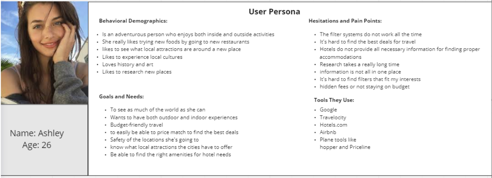
User Persona
Lastly, I developed a user persona. I did this to understand who my user was and what problems they were facing in their
current planning methods. Ashley is an employee looking to take time off to travel. She wants to be able to find an easy
way to plan her trips, but the planning process tends to be difficult. Some of her pain points are filter systems not working,
and the research process taking too long. Some of her goals are finding places with enough things to do, staying on budget,
and finding the right hotel or Airbnb.
Ideation
For the next step in the Design Thinking Process I had to ideate. This means of course think of ways to solve user pain points.
To brainstorm I looked at competitors to see what areas of their websites worked and what ways I could make my app stand out from theirs.
I also put ideas I had into a prioritization-matrix to find the ideas that were the easiest to implement with the highest results. I had limited
time to work on it so I had to focus on the ideas I was sure I could get done in time. After that I did user flows and sketches to think
of how the app would work from a users point of view. The sketches focused more on the design aspects however they were made with the user flows in mind.
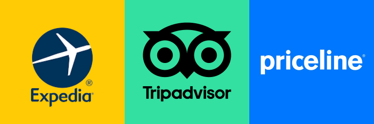
Competitor Analysis
To pick which Competitors I looked at I looked at the products people said they used in the interview process
and went from there. I had never had to plan my own trips in the past, so I was unaware of what competitor
products offered and what they looked like. To get a better understanding of what I wanted to include in
Dual Nature I looked at products like TripAdvisor and Expedia to see not only what they were doing well but
what they were doing poorly. I wanted to look at all aspects to see what I could use in my own design that
would work well but also start thinking of ways to make Dual Nature stand out from the competitors.
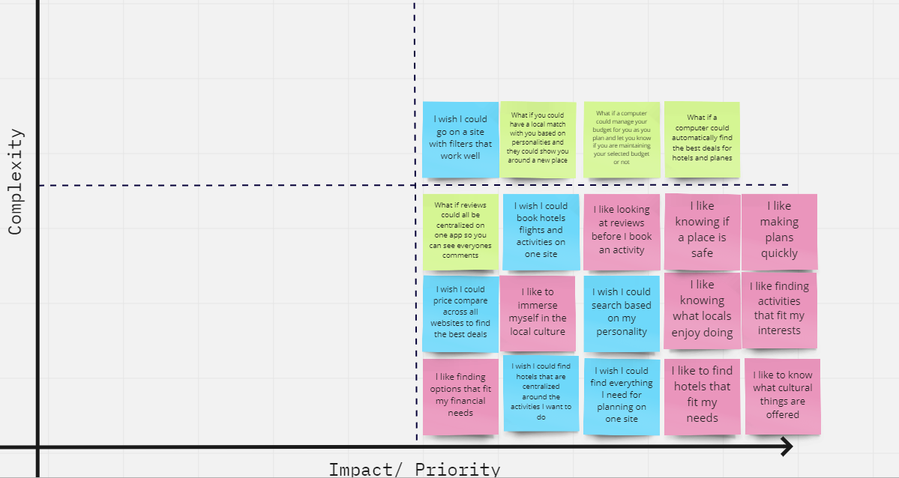
Prioritization Matrix
I then started thinking of a lot of features and needed to figure out which ones to include. After writing all
the features down on sticky notes I began organizing them into a Prioritization Matrix. I did this to determine
which ideas would have the highest impact and would be easy to implement. Focusing on these ideas allowed me
to think of what could be implemented in the time I had to work on the project. Using high impact and low
complexity ideas only allowed me to limit scope.
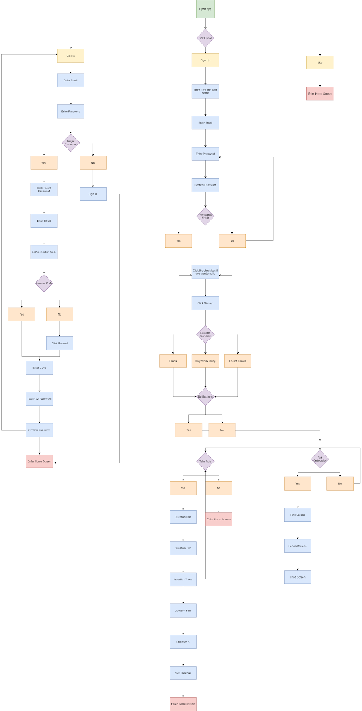
Onboarding User Flow: View Diagram
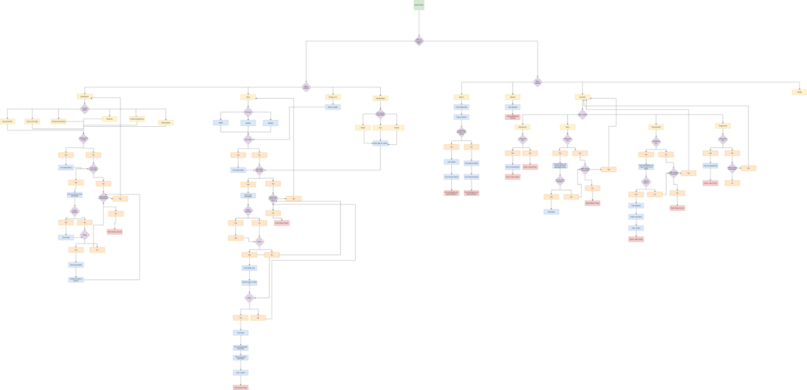
App Features User Flow: View Digram
User Flows
After that I made a user flow to highlight how users would go about achieving various tasks
on the app. The top image shows the onboarding process while the bottom image shows in app
features such as looking up destinations or stays. I did the onboarding userflow first considering it
is so important to user retention. I wanted to make sure that the users understood what the app had to offer
in a way that was not overly complex. I then layed out how the user might use the app so that I could begin
to look at what the process of using the app would look like as a user. It was important to making sure the app
flowed nicely from the users point of view.
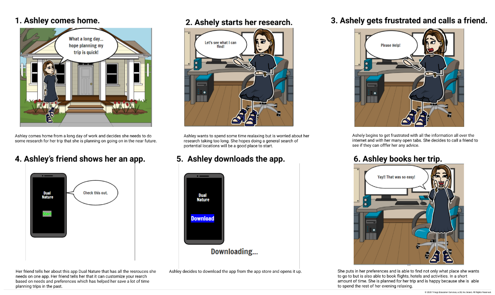
Storyboard
Next, I did a storyboard to start thinking of how users might use Dual Nature to make their travel plans easier.
Ashley is a young employee looking to take time off to travel. She wants to be able to find an easy way to plan
for her trips, but the planning process is difficult. Some of her pain points are filter systems not filtering
out information correctly, and research for travel takes a longtime to do well.
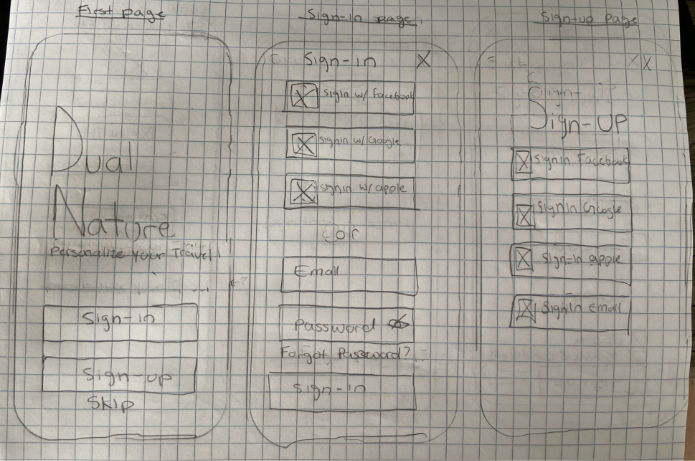
Sketches
The sketches focused on the onboarding process in the beginning. I wanted to make sure
that people first downloading the app would have an easy time being onboarded. The sketches above
are ideas I had on how to layout the sign in and sign up pages. It did not even occur to me at this point
how much time I was spending on the starting point of the app. I was hoping to make the sign up and sign in process
so easy that I forgot to explain the key features of the app.(the onboarding was changed after this was brought up in
testing).
Wireframing and Low-Fidelity Prototype Testing
It's time to wireframe and prototype. After I thought of potential solutions to user pain points I wanted to
start making prototypes so I could test these ideas out.
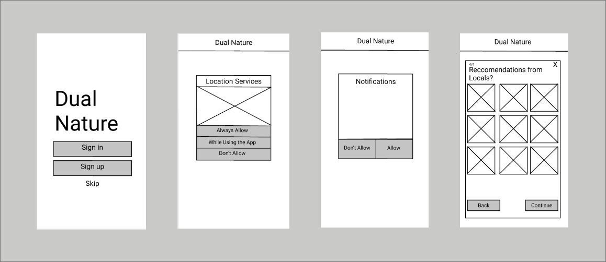
Wireframes
There were some iterations from the sketches to the digital wireframes. The focus was
to get the wireframes laid out well so the initial onboarding process could be as straight
forward and as easy as possible for new users of the app.
Usability Testing
I conducted 5 usability tests mostly over zoom because testers were either not local
or they were more comfortable meeting over zoom because of the pandemic. For the testing I
came up with very simple tasks for the users. At this point I had only really focused on onboarding
so users simply had to sign up and sign in to the app.
Goals
My ultimate goal of this testing was to see if the onboarding was straight forward
and easy to get through. I wanted to see if anything was missing or confusing so that
it could be added or clarified in the later iterations of the prototype.
Key Findings
Users wanted to be onboarded more than I initially thought. They were looking for
something to tell them about the key features of the app during the onboarding
process so they could have a better understanding of what the app's purpose was.
Almost every single person was confused about what the app was for so it was something
I needed to make clear going forward.
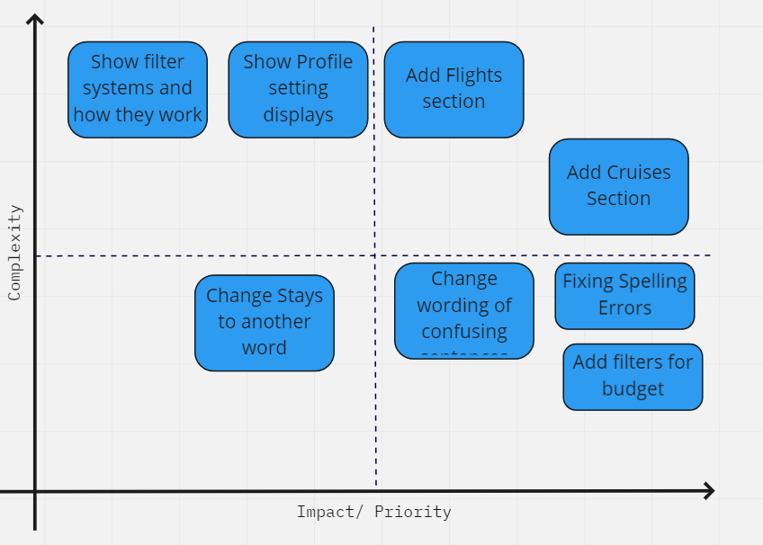
Prioritization Matrix
After I completed the Mid-Fidelity Prototype testing I put the key user insights
from usability testing into a matrix to determine what features I should include in the high-
fidelity prototype that were not already in the app. Some items were just simple fixes while
others were much more complex. I wanted to focus on the easy fixes because I had limited time to
fix the app and wanted to implement changes that I could do well. It would not have been beneficial
to add something at this point that would have caused more problems than solutions.
I did two seperate testings one for both low and mid fi to see what areas
the app needed to be improved which led to my final mockups.
IOS Mockups
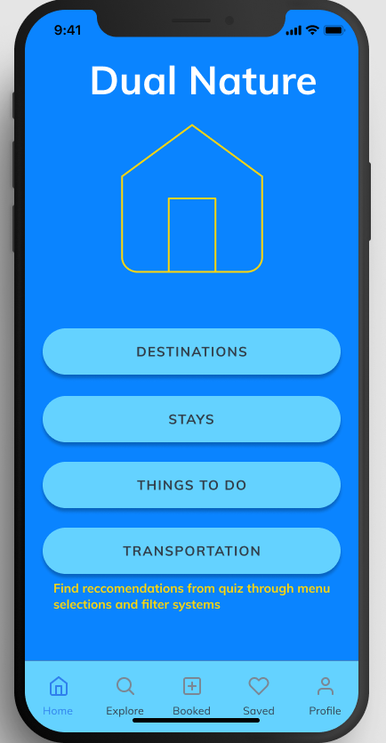
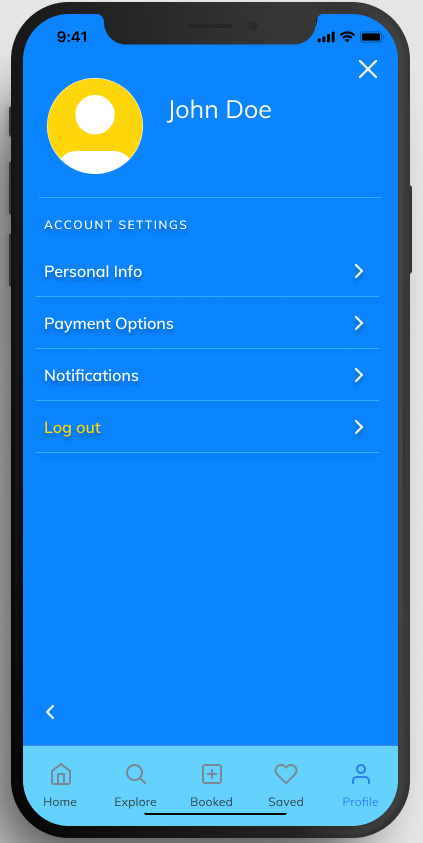
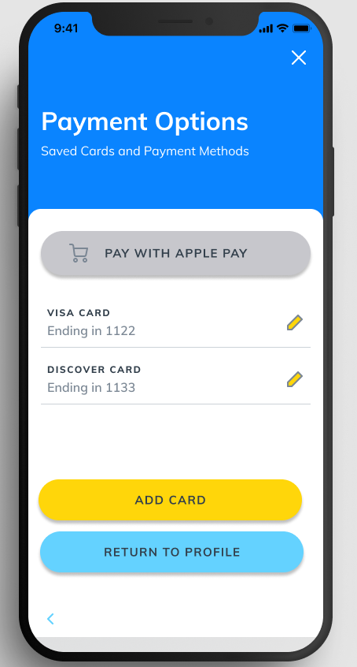
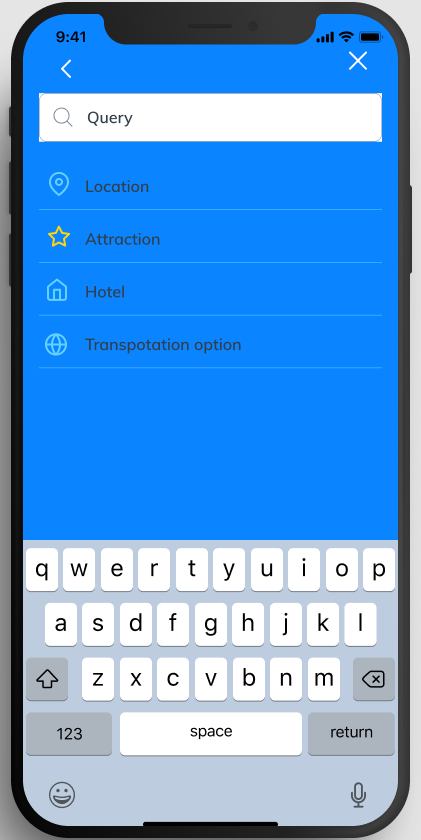
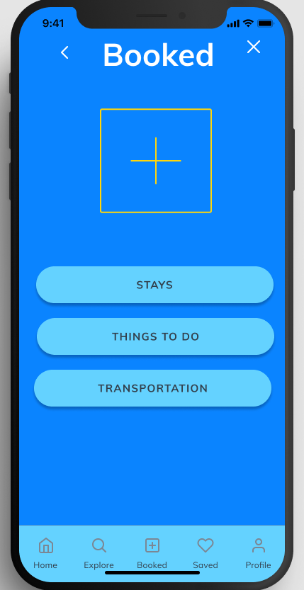
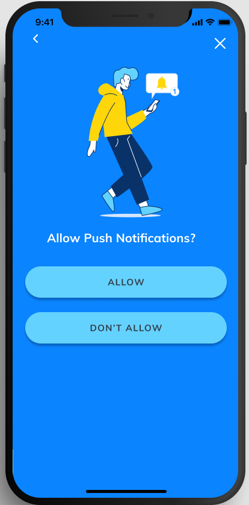
Final Thoughts and Conclusion
Leassons Learned
Focusing your design on the user needs is key, iterating your product is interesting
because your final product is nothing like the initial idea. This was fun for me because
the process was truly user-centerd. I had such little experience with travel apps that it
made it even easier to focus on the users. They're feedback and pain points truly drove the
process. I was designing to do the best I could to help users travel planning lives become easier.
Do Better
I could have focused my idea more around the actual app sooner. I spent so much
time worrying about onboarding in the beginning, so I had to play catch up when
developing the app functionality and the layout. This put me behind and forced me to
play catch up later in the process which became very time consuming and hard to get
through (even if it was worth it in the end).
Key Takeaways
Defining what your user needs is key, you have to compartmentalize what you think
someone wants to find out what they really need, user interviews help drive the process
of conceptualizing an app for your ideal users, iterating is so important so you can
consistently improve what you are making even if they are small things.